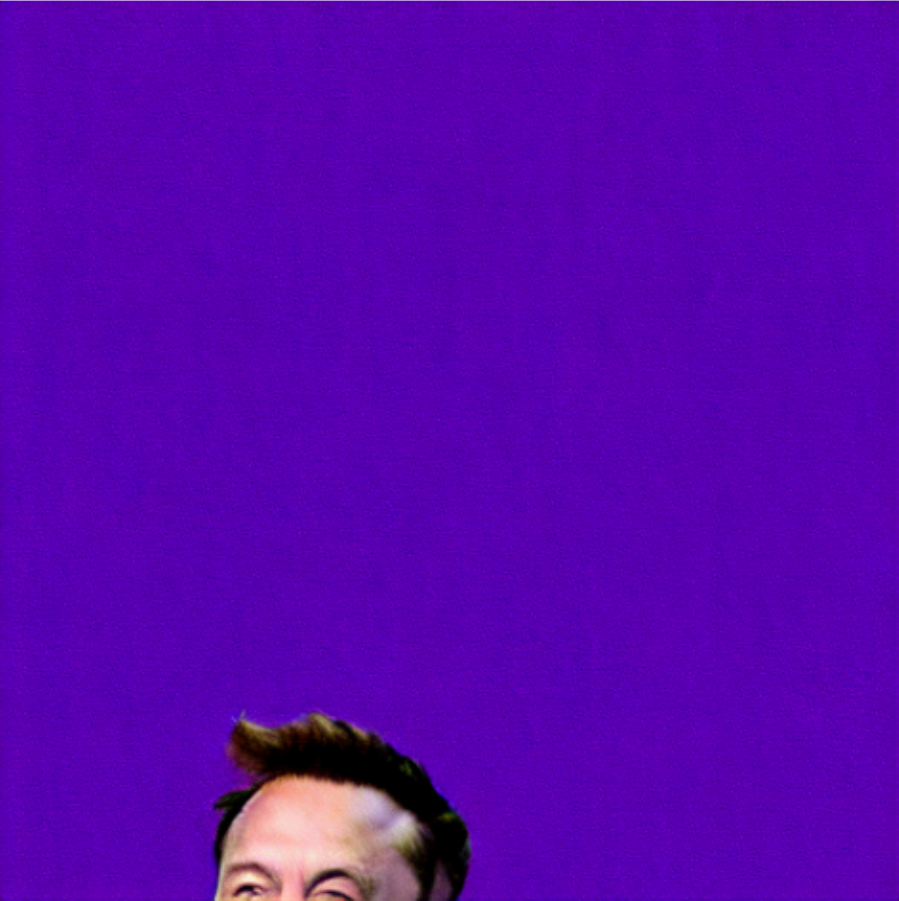

Latent Drifting in Diffusion Models for Counterfactual Medical Image Synthesis
Collaborating Institutions


Scaling by training on large datasets has been shown to enhance the quality and fidelity of image generation and manipulation with diffusion models; however, such large datasets are not always accessible in medical imaging due to cost and privacy issues, which contradicts one of the main applications of such models to produce synthetic samples where real data is scarce. Also, fine-tuning on pre-trained general models has been a challenge due to the distribution shift between the medical domain and the pre-trained models. Here, we propose Latent Drift (LD) for diffusion models that can be adopted for any fine-tuning method to mitigate the issues faced by the distribution shift or employed in inference time as a condition. Latent Drifting enables diffusion models to be conditioned for medical images fitted for the complex task of counterfactual image generation, which is crucial to investigate how parameters such as gender, age, and adding or removing diseases in a patient would alter the medical images. We evaluate our method on three public longitudinal benchmark datasets of brain MRI and chest X-rays for counterfactual image generation. Our results demonstrate significant performance gains in various scenarios when combined with different fine-tuning schemes.
Our proposed method, Latent Drifting (LD), is formulated as a min-max optimization problem aiming to match the learned distribution of pre-trained models to a new distribution represented by finite accessible samples. The latent space adds to the traditional conditions (e.g., text or image), and its underlying distribution functions as an additional hyperparameter and conditioning factor.
| δ = -0.1 | δ = -0.05 | δ = 0 | δ = 0.05 | δ = 0.1 |
|---|---|---|---|---|
|  | ||||

We evaluate our method on three public longitudinal benchmark datasets:
Our experiments demonstrate that Latent Drifting significantly improves the performance of diffusion models for medical image generation and manipulation across various scenarios:
We presented Latent Drifting (LD), a novel approach for enhancing diffusion models for medical image generation and manipulation. Our method addresses the challenges of distribution shift between natural and medical images, enabling high-quality counterfactual medical image synthesis. By formulating conditioning as a counterfactual explanation optimization problem, LD provides a more restrictive way of conditioning suited for medical applications.
The key advantages of our approach include:
Future work will explore the application of Latent Drifting to other medical imaging modalities and investigate its potential for clinical decision support through counterfactual reasoning.
@inproceedings{yeganeh2025latent,
title={Latent Drifting in Diffusion Models for Counterfactual Medical Image Synthesis},
author={Yeganeh, Yousef and Farshad, Azade and Charisiadis, Ioannis and Hasny, Marta and Hartenberger, Martin and Ommer, Björn and Navab, Nassir and Adeli, Ehsan},
booktitle={Proceedings of the IEEE/CVF Conference on Computer Vision and Pattern Recognition (CVPR)},
year={2025}
}
This work was supported by the Munich Center for Machine Learning (MCML) and is part of the Munich-based consortium "Electronic Health Initiative for Oncology (EHIO)". We thank the members of the CompVis group at LMU Munich and the CAMP group at Technical University of Munich for their valuable feedback.